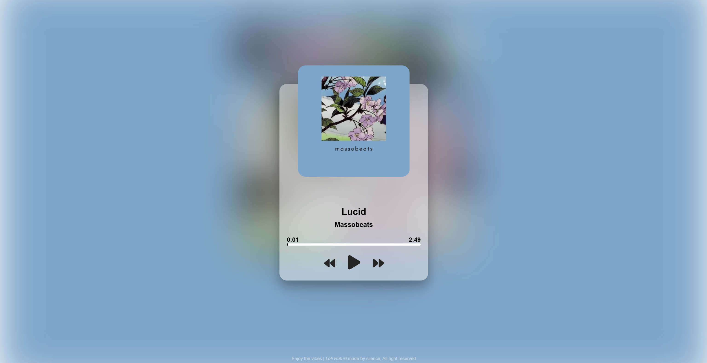
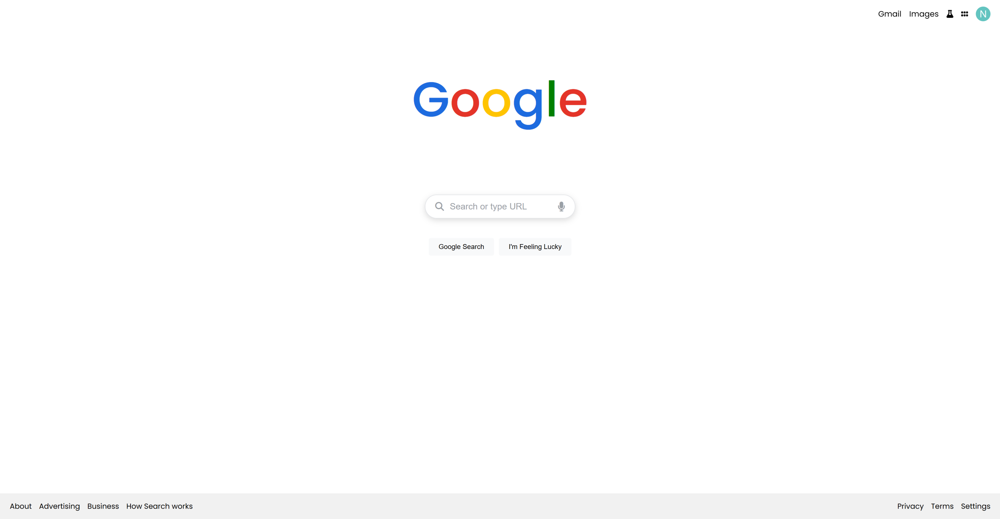
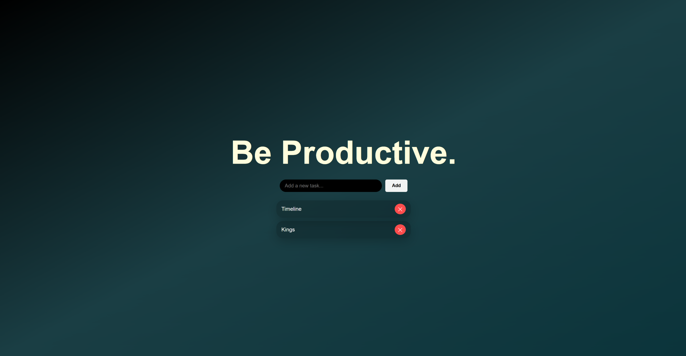

My work
Here is some of my best work!

Flipclock
A fully functional flipclock that was mostly made with javascript.
One downfall is its set to one timezone (PDT)...

Music Player
A music player that I made in HTML, CSS, and JS.
I used this to practice javscript.

Google Clone
A simple google clone I made using HTML CSS and JS.
This has full search functionality and was made to practice.

To-do list
A to-do list that I made in HTML, CSS.
I use this as a to-do list for coding projects.